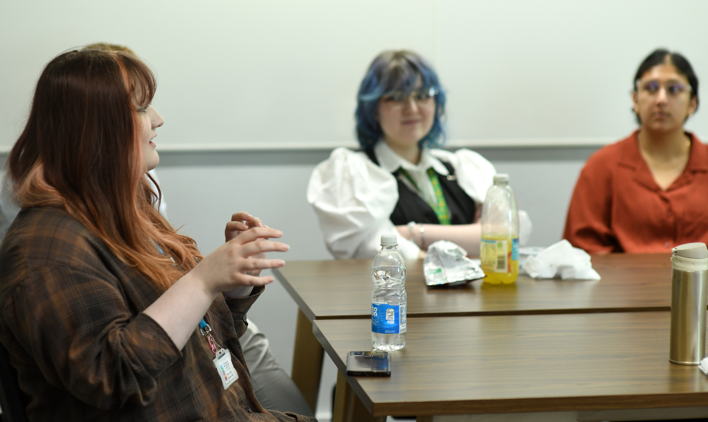

Work Experience
Over the past few years I have had many opportunities to gain valuable experience across multiple sectors, including AI, Cybersecurity, and Research. Scroll down to learn more!
Internships
Cyber & AI Placement - In the summer of 2023, I spent three months working with a government agency, contributing to a research paper on security services and artificial intelligence.
XR Developer - At the University, I worked for development labs like XR Stories & SIGN, engaging with projects for Emmerdale, Tala Lee-Turton, and The Captain Cook Museum in Whitby.
SCADEMY - AI & Cyber based short course funded by the government covering secure coding practices in C/C++
Research Assistant - As a research assistant at York, I focused on digital accessibility, especially for students learning programming for the first time.
Conference Support - As part of my research role, I contributed to the DigAcc conference, leading talks and roundtable discussions on digital accessibility.
Image Gallery

Round table discussion at the DigAcc conference 2024
 Hosting the York campus conference group
Hosting the York campus conference group
 Final game produced as part of my work with XRStories
Final game produced as part of my work with XRStories
Cyber-related Qualification gained during my first internship